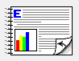

Reprint One Specific Report
This task will help you look up one specific order and print a paper copy.
- From the top drop-down menus, select Area > Order. A list of all orders will appear.
- From the top drop-down menus, select Order > Search By Order Number.
- Enter order number and hit Enter.
- Click on the order to highlight it.
- From the top drop-down menu, select Order > Report Test Results.
- Uncheck the marked boxes for "Laboratory" and "Extension", then click Print.
- A dialog box will pop up for printing; click Properties.
- Select Finishing from the top tabs menu.
-
Check "Print on Both Sides" and uncheck "Flip Pages Up" (if selected). When you
are done, the arrow on the page diagram should be be pointed left as shown
below.
Figure: Correct page diagram for printing

- Click OK to exit the "Print Settings" dialog box.
- Click OK on the remaining "Print Setup" screen.
- A second "Print Setup" screen will pop up. Click OK without changing the settings.
- A dialog box will appear saying "Please load paper for Client copy then click ok!" Go to the printer and replace the regular (20 lb) paper with the report (24 lb) paper. Click OK.
- Another dialog box will appear, saying "Please load paper for Firm/Agency copies, then click OK!" – WAIT AT THIS STEP.
- Wait for all client copies to print. The final page will be blank on both sides.
- Go to the printer and replace the report (24 lb) paper with blue paper.
- At the computer, click OK to print firm/agency copies.
- A dialog box will appear saying printing is complete; click OK.
- Remove the blue paper from the printer and replace with regular (20 lb) paper for everyday use.